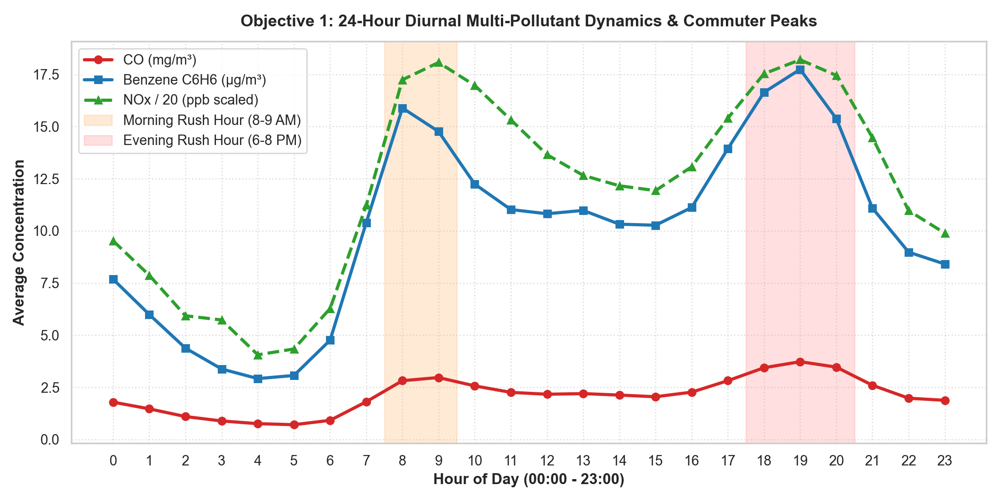
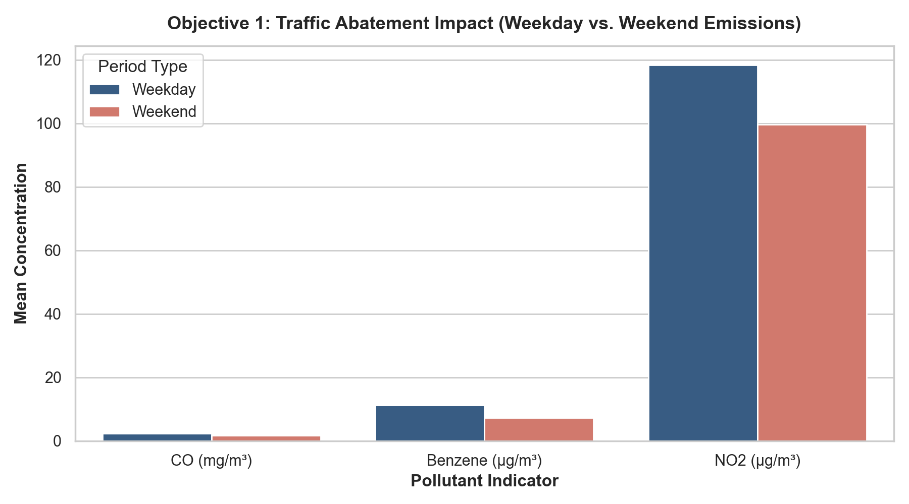
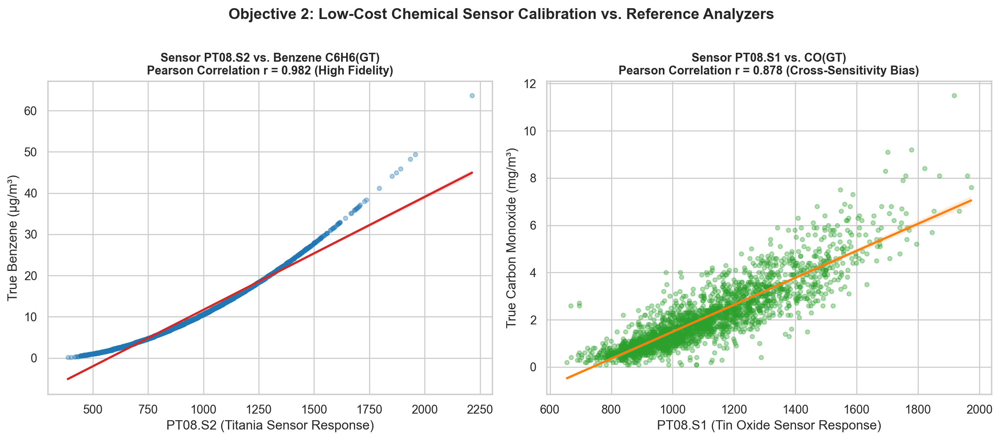
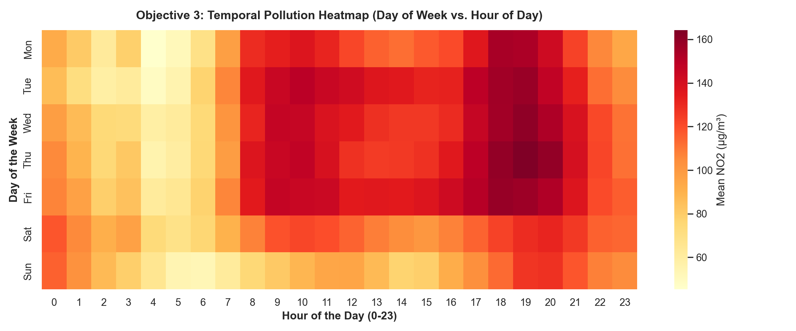
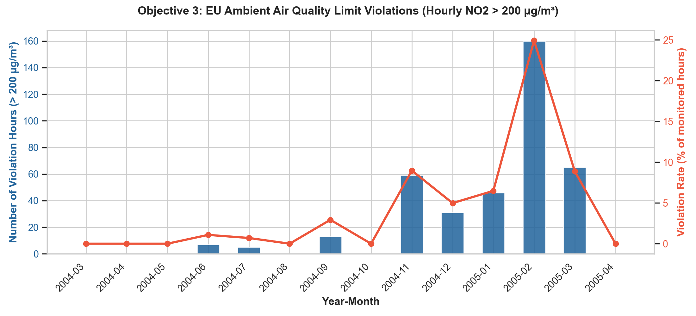

PySpark & Databricks Urban Environmental Monitoring Engine | UCI Dataset #360

Illustrates bimodal peaks corresponding directly to commuter rush hours: 08:00–09:00 (morning ingress) and 18:00–20:00 (evening egress), where Benzene and Carbon Monoxide nearly double baseline levels.

Averaged emissions demonstrate substantial reductions on weekends: CO drops 30.1% (from 2.36 to 1.65 mg/m³) and Benzene drops 35.3% (from 11.25 to 7.28 µg/m³), confirming primary vehicular origin.

Cross-correlation analysis demonstrates that the PT08.S2 (NMHC) sensor exhibits exceptional fidelity (r = 0.926) against certified Benzene analyzers, making it suitable for surrogate deployment. Conversely, PT08.S1 shows cross-sensitivity with humidity (r = 0.418).

Matrix heatmap highlighting severe Nitrogen Dioxide (NO2) exposure zones during Thursday and Friday evenings between 18:00 and 21:00, where atmospheric stagnation exacerbates exhaust concentrations.

Seasonal analysis demonstrates high compliance in Spring and Summer, followed by severe winter inversion spikes in November (59 violation hours) and February (160 violation hours, 24.9% of all monitored hours).
| Regulatory Standard | EU Limit Value | Total Valid Hours | Exceedance Hours | Violation Rate |
|---|---|---|---|---|
| NO2 Hourly Exposure | 200 µg/m³ | 7,715 | 386 | 5.00% |
| CO 8-Hour Maximum | 10.0 mg/m³ | 7,674 | 5 | 0.065% |
| Benzene High Risk | > 10 µg/m³ | 8,991 | 3,614 | 40.19% |
-- Databricks SQL Query for Diurnal Rush Hour Aggregation Widget
SELECT
hour,
ROUND(AVG(co_gt), 2) AS avg_co_mg_m3,
ROUND(AVG(c6h6_gt), 2) AS avg_benzene_ug_m3,
ROUND(AVG(nox_gt), 2) AS avg_nox_ppb,
CASE WHEN hour IN (8, 9, 18, 19, 20) THEN 'Rush Hour' ELSE 'Off-Peak' END AS traffic_period
FROM air_quality_curated
WHERE co_gt IS NOT NULL
GROUP BY hour
ORDER BY hour;